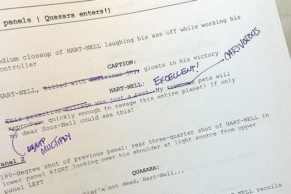
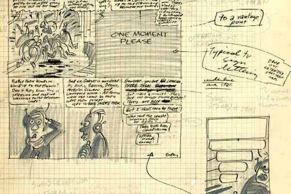
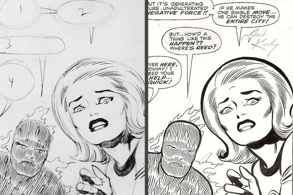
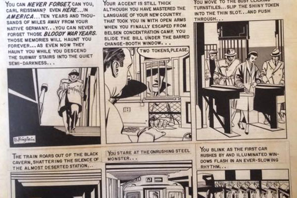
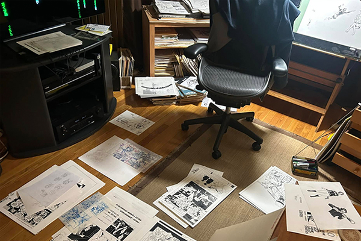

Creative process

There's no right way to build Utopia
No single "correct" way to create comics. Whether collaborating or working solo, different approaches suit different creators and projects. Study how professionals work, then discover what fits your creative voice.
Professional methods

Full scripts are organized by page with panel descriptions and "camera" angles. The writer is completely responsible for dialog, captions, SFX onomatopoeia, and story pacing.
- Some writers begin with thumbnail sketches before typing anything. "Chicken scratch" drawings can help visualize "camera" angles, left-to-right speaking order, space for word balloons, and the like. These thumbnails are only tools for writing a script, and should never be given to the artist.
- Writing just panel descriptions and dialog — without page numbers and panel indications — is an alternative approach that lets the artist pace the story.

Harvey Kurtzman method
Best for: Meticulous planners who want complete control before final art begins
Workflow pioneered by Harvey Kurtzman at EC Comics:
- Writer provides complete script, detailed thumbnails with lettering indications, and all reference materials
- Letterer formats original art with lettering and panel borders
- Artist illustrates on pre-formatted boards
- Advantages: Writer maintains vision, artist focuses on illustration, minimal revisions needed
- Challenges: Time-intensive thumbnailing, requires skilled letterer, less flexibility for artist interpretation
- Working adults: Front-loads planning work but reduces surprises during execution.
- Portfolio builders: Shows you can work within strict specifications — valuable for studio work.

Marvel method
Best for: Visual storytellers who think through drawing, collaborative teams
Creative process Marvel Comics adopted in the late 1950s:
- Writer and artist create plot synopsis together
- Artist pencils entire story without dialogue or captions
- Writer adds copy to finished pencil art
- Advantages: Artist controls pacing and visual storytelling, faster than full script method, encourages visual thinking
- Challenges: Requires strong artist-writer communication, dialogue must fit existing art, can lead to overcrowded panels
- Working adults: Great if you draw better than you write — let visuals lead.
- Portfolio builders: Demonstrates visual storytelling ability independent of script.

EC Comics method
Best for: True collaboration between writer and artist
Similar to Kurtzman method but artist involved earlier. Pioneered by Al Feldstein at EC Comics:
- Writer sends tight plot to artist
- Artist breaks plot into pages and panels
- Writer creates full script based on artist breakdown
- Letterer formats original art with lettering and panel borders
- Artist illustrates on pre-formatted boards
- Advantages: Combines writer's narrative control with artist's visual instincts, reduces revision cycles
- Challenges: Requires excellent communication, more back-and-forth than other methods
- Working adults: Best for small teams or partners who communicate well.
- Portfolio builders: Shows collaborative skills valued in professional studios.

Page builder
Best for: Spontaneous creators, experimental work
Create each page one at a time in uninterrupted sessions without outline, script, layout, page count, or plan.
- Advantages: Pure creative flow, no planning paralysis, surprises even the creator
- Challenges: Difficult to maintain narrative coherence, hard to predict page count, risky for deadline work
- Working adults: Great for personal projects or creative exercises — not for client work.
- Portfolio builders: Shows creative confidence but pair with structured work to prove versatility.
Post-It method
Best for: Organic story development, discovery writers
Create panels in isolation, organize into pages, then structure into a complete story.
- Draw panels on Post-Its
- Create moments freely without worrying about page design or panel count. Content can be art and/or words. You might have 10 panels or 100.
- Group panels into pages
- Don't worry about design yet. Five to six panels per page is typical, but some need one, others need twelve. Reorder for dramatic effect.
- Design your pages
- Use groupings to draw thumbnails. Figure out layouts, camera angles, lettering. Then write full script based on thumbnails.
Explore more
- Finding your process
- Try different approaches on different assignments. Your personal process emerges from what feels natural versus forced. Don't lock into one method early.
- Study which professionals work in ways that match your strengths. Fast sketcher? Look at Kirby and the Marvel Method. Meticulous planner? Study Kurtzman.
- The key: Process serves the work. There's no "correct" method — only what produces your best results.
- Ready to experiment?
- Try different methods on course assignments to discover your creative process.
- View course assignments
- Browse studio resources
- Learn more about the course